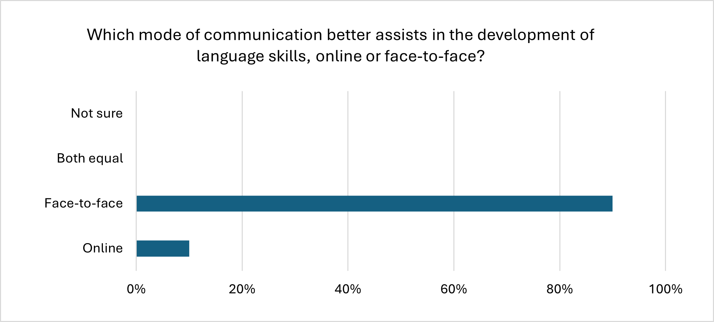

<!DOCTYPE html>
<html lang="en">
<head>
    <meta charset="UTF-8">
    <meta name="viewport" content="width=device-width, initial-scale=1.0">
    <title>LT3210 Final Project</title>
    <style>
        .bigtitle{
        background: lightsteelblue;
        text-align: center;
        margin-bottom: 30px;
        font-size: 30pt;
        padding: 30px;
        color: black;
        border-radius: 20px;
        box-shadow: 0 2px 3px rgba(0,0,0,0.1);
    }
        .analysis{
        background: rgb(220, 247, 242);
        margin-bottom: 10px;
        font-size: 20pt;
        padding: 20px;
        color: black;
        border-radius: 20px;
        box-shadow: 0 2px 3px rgba(0,0,0,0.1);
    }
        .analysis1{
        background: rgb(220, 247, 242);
        font-size: 13pt;
        margin-bottom: 20px;
        padding: 30px;
        color: black;
        border-radius: 20px;
        box-shadow: 0 2px 3px rgba(0,0,0,0.1);
    }
        
    </style>
</head>
</html>
    <h1 class="bigtitle">LT3210 Final Project</h1>

    <body style="background-color: #F7F2ED;">


        <p class= "analysis" style="font-size: 22px;"> 5. Language Skill Development </p>
    <br>
    <div style="display: flex; flex-wrap: wrap; justify-content: center; gap: 20px;">
    <div style="text-align: center;">
    
    </div>

</div>
    <br>
    <p class= "analysis1">The above table shows that 90% of respondents agree that “face-to-face” is a better mode for assisting in the development of language skills, while very few opted for “online” as the primary mode for language development. As “face-to-face” communication require language structure like body language and facial expressions, which convey emotions more effectively than online conservations. Assumption made by LLMs based on the data’s preference for “face-to-face” communication reflects human experiences and perceptions. Language models reflect common insights from massive datasets that are relevant to real life interactions. LLMs reflect common sentiments and insights drawn from large datasets that regards to typical human interactions. </p>

    
        
        <p><p1 style="font-size: 20px;"><a href="analysis6.html">Perceived Formality and Intimacy in Different Modes</a></p1> <p2>&nbsp;&nbsp;(next)</p2></p>
        <p><p1 style="font-size: 20px;"><a href="analysis4.html">Multitasking and Language Use</a></p1><p2>&nbsp;&nbsp;(previous)</p2></p>
        <p style="font-size: 20px;"><a href="index.html">Main Page</a></p>